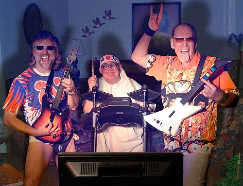

The Hamsters
14-Apr-2017 | Milku
The hardest-working band in the land.
Most quotations and references to hamsters link us with exercise wheels, being stuck on a path to nowhere and stressed because of that. So it was refreshing for me to discover the following quote from Kerrang that puts a different emphasis on the efforts of hamsters:
“The hardest-working band in the land - there's no excuse for not catching their hardest of hard blues.”
OK, so it wasn't referring to hamsters in general, but I can pretend... Kerrang's Hamsters were a British band from Southend-on-Sea, Essex, England.
According to their Wikipedia entry, they performed for 25 years between on 1 April 1987 and 1 April 2012. I bet their fans thought that the announcement the band was splitting was just a big April Fool's gag. The band, after all, were renowned for their humour as well as their music. They used some great stage names:
- Snail's-Pace Slim - which was a parody of old time blues players' nicknames
- Rev Otis Elevator - was taken from the name of an escalator manufacturer
- Ms Zsa Zsa Poltergeist - was the name of a character from the BBC radio comedy show Round The Horne
Their album titles sound intriguing. I have just got to get my paws on a download of Flasher Hamsters From Hell and Pet Sounds: 10 Years Of Rodent Rock. Maybe I'll start with They Live By Night as that sounds so me! Apparently, they were inspired by Jimi Hendrix and ZZ Top so nothing like the dreadful music that's usually played in my house. For that reason alone, they should be worth listening to.
You can find out more about them via The Hamsters website.
I wonder whether I could make a bit of music to while away the night hours? Snacking and playing is fine, but I feel I could do so much more...and that has to be my cue to put in another picture of me eating. My humans can't seem to move fast enough to take pictures of me doing anything else!